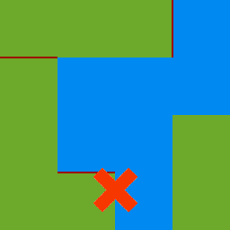
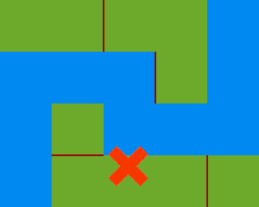
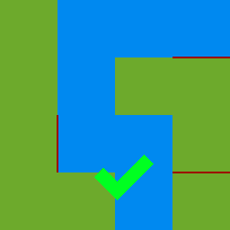

All players are trying to find treasure on the field and bring it to home. They act one by one, moving or shooting in one of four directions. You can see information about all (not only your) actions and it's results and use it to draw map of gamefield.
Gamefield is rectangle, consisting from tiles of different types. Also there are walls between any tiles and around gamefield.
Usual tile. When you step on it, you got field
message.
It's your base - place, where you respawn after death, where you restore your ammo and where you should bring treasure.As tile it similar to field - when you step on it you got info about owner of it.
Part of the most coward structure of gamefield - river. It's curving line from water tiles, flowing from north to south and ending by grate - wall on the bottom of gamefield, under last river tile. First tile is on top of gamefield and last is on bottom. Every tile (excluding first and last) have exactly two neighbours: next and previous tiles. Because river flow downward, next tile can't be to the north.
  When your step into river, you got swepted away by N tiles adrift (N - river flow
parameter).You get river
message for every visited tile.If you reach last tile before you moved by river N times, you stop and get one message grate
.
River flow= 2;
River-river-rivermessage
River flow= 2;
River-river-gratemessage
Part of other structure - swamp. Swamp is bloc from exactly N swamp tiles (N - swamp size
parameter). Only side-neighbours become part of one block; diagonally-located tiles don't merge.
Swamp size= 3
You can't walk on swamp, so on step you just get swamp
message and stay in place.
It is N portals on gamefield, numbered from 1 to N (N - portal count
parameter). When you step on it, you teleport to next portal (or to first from last) and get messages about both visited tiles.
It is three types of walls: breakable, unbreakable and grate. When you go to it, you get message (grate
for grate and wall
for other types) and stay in place. Breakable wall can be found everywhere excludung gamefield edge and borders between water tiles.It can be broken (suddenly!). Unbreakable is around gamefield; grate replace it under last river tile (and, maybe, above first, but you can't check it, bugaga). This types can't be broken.
Spawn only one, only on field. Bring it to your home to win.
In addition to moving you can shoot in one of four directions. This action can be performed only if you have bullets (judging by the effect, it's rockets), which can be restored in your home.Bullet move until first obstacle: if it's player, he die, if it's breakable wall - it break.
Death can be caused by bullet or by other player who step on you while was moving. You resurge in your home and on start of your turn get death
message (you can get multiple messages if rivals kill you again before your turn). All your item drop on death tile.
Throughtoption
Gamefield looped: it hasn't edges. Unbreakable walls and grate are missing. River hasn't start and end tiles - it looped too.